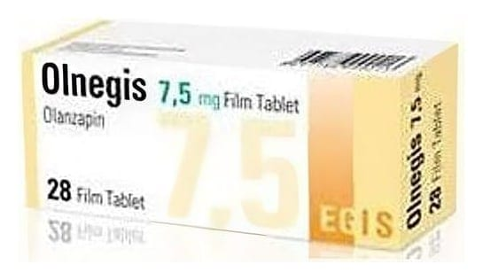

Olnegis 7,5 mg Film Tablet, 28 Adet

Ne için kullanılır
KT · Bölüm 1OLNEGİS, 28 tabletlik OPA/Al/PVC//Al blisterinde karton kutu içinde kullanıma sunulmaktadır. Film Kaplı Tablet. Sarı renkli, oblong, bikonveks film kaplı tablet Hayvansal kaynaklı laktoz monohidrat (sığır kaynaklı) içerir. OLNEGİS antipsikotikler adı verilen ilaç grubuna aittir ve aşağıdaki durumların tedavisinde kullanılır: OLNEGİS, gerçekte var olmayan şeyleri duymak, görmek veya hissetmek, yanlış inanışlar, anormal şüphecilik, içine kapanmak gibi semptomların eşlik ettiği bir hastalık olan şizofreninin tedavisinde kullanılır. Ayrıca bu hastalığı yaşayan hastalar kendilerini depresif, endişeli veya gergin hissedebilirler. Heyecan ve coşku hali durumları görülen, orta ve şiddetli manik dönemler, OLNEGİS’in manik dönemde olanzapin tedavisine cevap veren bipolar bozukluğu olan hastalarda, bu semptomların tekrar oluşmasını önlediği gösterilmiştir. OLNEGİS benzer durumların tedavisi için 13-17 yaş arasındaki ergen hastalarda da kullanılabilir.